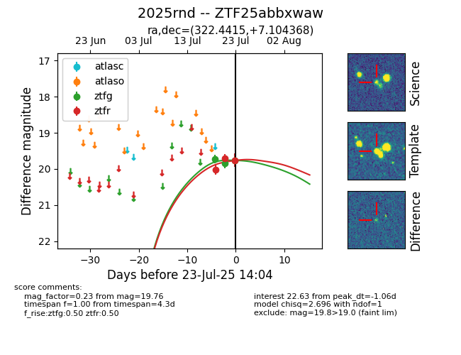

Target ZTF25abbxwaw at 2025-07-23 14:04, see:
FINK: fink-portal.org/ZTF25abbxwaw
Lasair: lasair-ztf.lsst.ac.uk/objects/ZTF25abbxwaw
ALeRCE: alerce.online/object/ZTF25abbxwaw
TNS: wis-tns.org/object/2025rnd
YSE: ziggy.ucolick.org/yse/transient_detail/2025rnd
alt names
ZTF25abbxwaw (ztf,fink)
2025rnd (tns,yse)
coordinates:
equatorial (ra, dec) = (322.4415,+7.10437)
galactic (l, b) = (60.4471,-30.42004)
photometry
last ztfg=19.76, ztfr=19.76
3 ztfg, 3 ztfr detections
